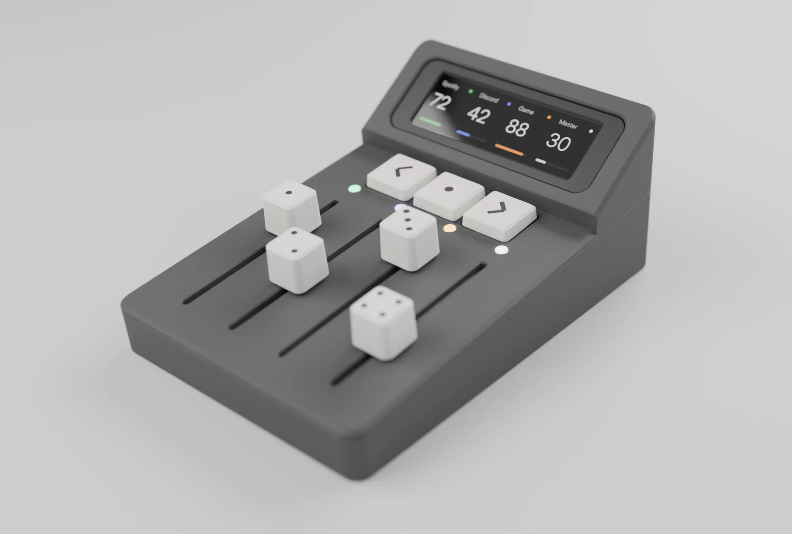

App Volume Mixer
Enclosure, PCB, firmware and a Windows app
Windows lets you set a separate volume for every app, but only by digging through a menu. This puts it on four physical faders. Each fader is assigned to one program, and the screen above shows every channel's level in that program's colour. The LED by each fader matches.
BANK− and BANK+ page through more apps when four isn't enough. A companion app on the PC decides which program goes on which fader and talks to the mixer over USB-C.
The fader caps are dice, so the pips tell you which channel is which.
The board, rev A
- Four slide potentiometers, one per channel
- Three mechanical switches: BANK−, SEL, BANK+
- Header for the SPI display
- UART header
- USB-C to the PC